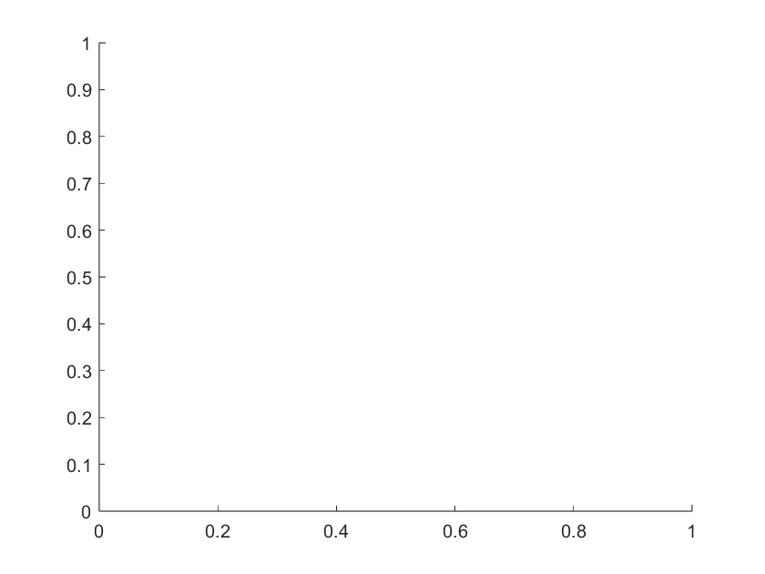

newplot
Specify where to draw graphics objects
Description
newplot prepares the current axes for a new plot by ensuring
that the new plot either adds to or replaces the existing plot. The behavior of
newplot depends on the NextPlot property
of both the axes and its parent figure. For more information, see Algorithms.
If no axes exist, newplot creates a new Cartesian axes object
in the current figure.
For a simple 2-D plot, use the plot function instead.
newplot( updates the specified axes
ax)ax instead of the current axes. You can use this
newplot syntax at the beginning of your graphics code to
determine which axes and figure to target with subsequent plotting commands.
cax = newplot(___)Axes object. Specify the output argument with
either of the previous syntaxes. Use cax to query and modify
axes properties after creation. For a list of properties, see Axes Properties.
Examples
Create the default plotting axes.
newplot

Position two Axes objects in a figure, and add a plot to each Axes object. Specify the axes as the first input argument to each plotting function.
tiledlayout('flow')
ax1 = nexttile;
ax2 = nexttile;
plot(ax1,peaks(20))
surf(ax2,peaks(20))
view([450 0])
By default, ax2 has a NextPlot property of 'replace'. Change the NextPlot property to 'add'.
ax2.NextPlot
ans = 'replace'
ax2.NextPlot = 'add';When the axes NextPlot property value is 'add', plotting into the axes does not reset axes properties or remove child objects from the axes. The new values are plotted with the existing child objects.
newplot(ax2) surf(ax2,peaks(5)+10)

Create two Axes objects, and add a plot to one of the objects.
tiledlayout("flow")
ax1 = nexttile;
ax2 = nexttile;
surf(ax1,peaks(20))
nexttile(1)
view([450 0])
Return the Axes object, and customize the axes appearance by setting properties of the object. For example, show the box outline and grid lines. Then set the axes NextPlot property to "add".
curr = newplot(ax2); curr.Box = "on"; curr.XGrid = "on"; curr.YGrid = "on"; curr.NextPlot = "add";
Add a plot to the second Axes object.
plot(curr,peaks(20))

Write a function named myPlot that plots data while respecting whether the hold state is on or off. In the function, call newplot to prepare the current axes for a new plot or to create axes if no axes exist.
function myPlot(data) ax = newplot; line(ax,XData=1:numel(data),YData=data,Marker="o"); end
Use myPlot to plot some data. The call to newplot in the myPlot function creates new axes if no existing axes are found.
d = linspace(0,12,100); myPlot(sin(d));
Turn the hold state on and use myPlot to plot another set of data. Because the hold function sets the NextPlot property of the current axes, this call to newplot ensures that the myPlot function adds to the existing plot.
hold on myPlot(cos(d)); hold off

Now replace the content of the axes with a new plot. Because hold is turned off, myPlot replaces the contents of the previous axes.
myPlot(cos(d+pi));

Input Arguments
Algorithms
The behavior of the newplot function depends on both the
NextPlot property of the figure and the
NextPlot property of the axes.
First, the newplot function queries the NextPlot property of the
figure. This table shows how the newplot function changes the
figure based on the value of NextPlot.
Value of | Behavior of |
|---|---|
|
|
|
|
|
This behavior is equivalent to using the |
|
This behavior is equivalent to using the |
Then, the newplot function queries the NextPlot property of the
axes in the figure. This table shows how the newplot function
changes the axes based on the value of its NextPlot property.
Value of | Behavior of |
|---|---|
|
This behavior is equivalent to calling the |
|
|
|
This behavior is equivalent to calling the |
|
For axes with only one y-axis, the
|
Version History
Introduced before R2006a